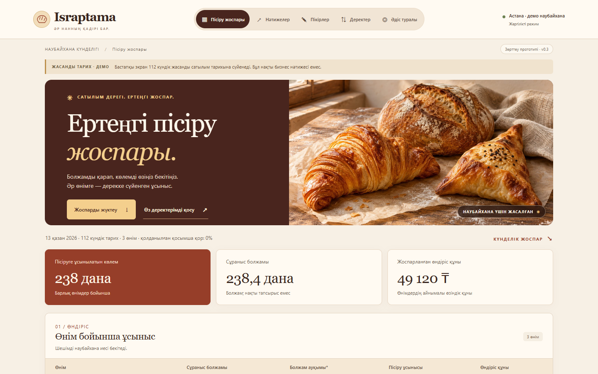

Israptama · Assignment #2
01 / 08A bakery decision studio
Bake for tomorrow.
Listen to today.
Two clearer decisions for a baker: what to prepare, and which feedback deserves attention.
Working MVP · Open-data NLP studyThe owner’s daily decisions
02 / 08One bakery. Two signals.
From sales history
How much should we bake?
Daily baked and sold counts become a suggested quantity for tomorrow.
From written feedback
Which comment needs a closer look?
English review text becomes a low-rating signal for a person to inspect.
Clear boundary: review classification does not change the production forecast. The planning figures shown in the demo come from synthetic bakery data.
Working MVP · Live demo
03 / 08The idea is already on screen.

Show the product in 30 seconds
- Open the production plan.
- Switch to Пікірлер (Reviews).
- Classify a sample English comment.
The review view displays both model outputs and the measured comparison.
Open the live dashboard ↗Screenshot of the working interface. Bakery sales shown here are simulated; the NLP experiment uses separate open review data.
The research question
04 / 08Can words flag low-rated feedback?
A 1–3-star rating is the target signal; 4–5 stars form the other class. This is a rating-derived proxy, not a verified complaint label.
Source: UCI Recipe Reviews and User Feedback ↗ · CC BY 4.0 · DOI 10.24432/C5FG95. TF-IDF fits training text only; validation chooses thresholds and the live model.
Option A · Controlled change
05 / 08Change the text representation. Keep the test fair.
Baseline
Words
One planned addition
Words + characters
Held fixed: recipe split, normalization, class weighting, C = 1, liblinear solver, and validation threshold rule.
Untouched test · 1,174 reviews
06 / 08More found. More false alerts.
Low-rated reviews caught · out of 73
+12 found
High-rated reviews flagged
+30 false alerts
The 95% recipe-cluster interval for the F1 difference is −0.066 to +0.080: a reliable gain is not established. The live model remains the word baseline, chosen before test inspection on validation F1 (0.620155 vs 0.619355).
From prototype to evidence
07 / 08Prove it in a real bakery.
What we know today
- English home-recipe comments are only a proxy for bakery feedback.
- Seven test recipes leave the model gap uncertain.
- No bakery waste reduction or operational uplift has been measured.
A small, honest pilot
Test with one real bakery.
- Collect opt-in feedback and local-language labels.
- Evaluate on new products before deployment.
- Measure triage usefulness and planning outcomes separately.
The prototype already makes its data, split, model choice, predictions, and limitations inspectable.
Israptama · The next step
08 / 08A working idea, ready for a real test
Bake with foresight.
Listen with care.
Give a baker one place to plan tomorrow and notice what customers are saying today.
Next ask: an opt-in bakery pilot. Business impact remains unmeasured.